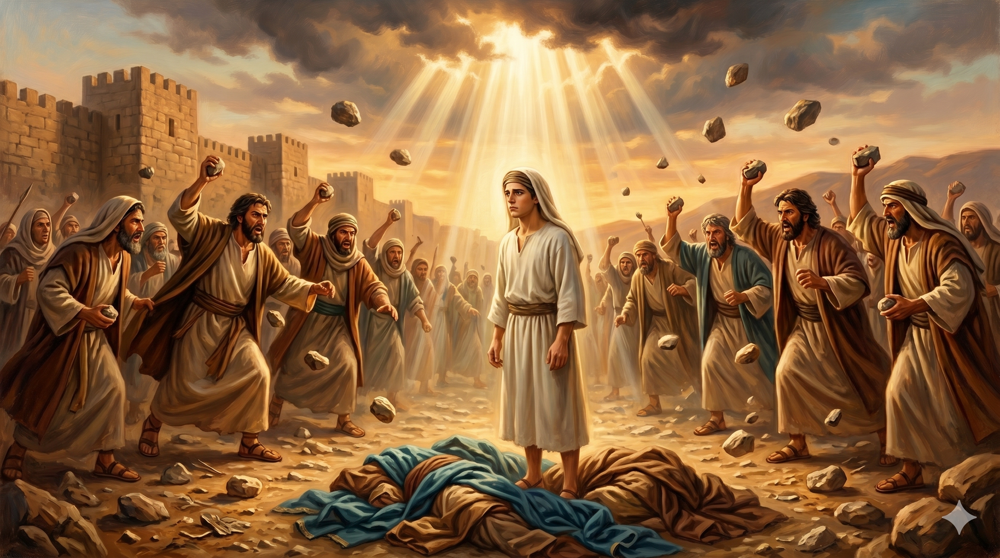

스데반이 무릎을 꿇고 "이 죄를 그들에게 돌리지 마옵소서" 기도하는 순교의 순간 — 돌들이 쏟아지는 가운데 예수님처럼 용서를 구하는 첫 순교자의 마지막 기도
"그들이 큰 소리를 지르며 귀를 막고 일제히 그에게 달려들어 성 밖으로 내쫓고 돌로 치니 증인들이 옷을 벗어 사울이라 하는 청년의 발 앞에 두니라 그들이 돌로 스데반을 치니 스데반이 부르짖어 이르되 주 예수여 내 영혼을 받으시옵소서 하고 무릎을 꿇고 크게 불러 이르되 주여 이 죄를 그들에게 돌리지 마옵소서 이 말을 하고 자니라" — 사도행전 7:57-60
무리는 귀를 막았습니다. 더 이상 말씀을 듣지 않겠다는 의지의 표현이었습니다. 그리고 일제히 달려들어 스데반을 성 밖으로 내쫓고 돌을 던지기 시작했습니다. 율법에 따라 증인들이 먼저 옷을 벗어 놓았는데, 그 옷들이 사울이라는 청년의 발 앞에 쌓였습니다. 이 짧은 언급은 후에 박해자 사울이 어떻게 이 장면의 목격자였는지를 보여 주는 동시에, 역사의 아이러니를 암시합니다. 스데반의 죽음 곁에 있던 그 사울이 훗날 바울이 되어 복음을 전하게 됩니다.
스데반의 마지막 두 기도는 놀랍습니다. 첫 번째: "주 예수여, 내 영혼을 받으시옵소서." 이것은 죽음 앞에서 드린 신뢰의 기도였습니다. 두 번째: "주여, 이 죄를 그들에게 돌리지 마옵소서." 이것은 자신을 죽이는 사람들을 향한 용서의 기도였습니다. 예수님이 십자가에서 "아버지여 저들을 사하여 주옵소서"(눅 23:34) 하셨던 것을 그대로 반향합니다. 스데반은 주님을 닮았을 뿐 아니라, 주님의 죽음을 자신의 죽음 방식으로 재현했습니다. 그리고 성경은 조용히 기록합니다. "이 말을 하고 자니라." 순교의 자리에서 스데반은 잠들듯 눈을 감았습니다.

스데반의 순교 현장 곁에서 증인들의 옷을 지키는 청년 사울 — 이 장면은 훗날 박해자 사울이 복음의 전도자 바울로 바뀌게 되는 역사의 한 장면으로 남는다
스데반은 돌에 맞으면서도 기도했습니다. 고통이 기도를 멈추지 않았습니다. 이것은 오랜 기도 훈련의 결과였습니다. 평소에 기도 습관이 없던 사람은 극한의 순간에 기도할 수 없습니다. 우리의 일상 기도는 폭풍이 올 때를 위한 준비입니다. 지금 이 순간도 기도하십시오. 감사할 때도, 평안할 때도, 작은 어려움 앞에서도 기도하는 습관이 쌓일 때, 우리는 스데반처럼 어떤 상황에서도 하나님께 나아갈 수 있습니다.
"이 죄를 그들에게 돌리지 마옵소서." 이 기도는 인간의 능력으로 나올 수 없는 기도입니다. 성령 충만이 아니면 불가능합니다. 용서는 의지의 결단이기도 하지만, 궁극적으로는 성령의 역사입니다. 오늘 당신이 용서하기 어려운 사람이 있습니까? 그 용서를 내 힘으로 하려 하지 말고, 성령의 충만함을 구하십시오. 스데반이 보여 준 것처럼, 성령 안에서 인간은 원수를 위해서도 기도할 수 있습니다.
스데반은 돌을 던지는 자들을 위해 기도했습니다.
용서는 감정이 아니라 성령의 역사입니다.
오늘, 용서하기 가장 어려운 그 사람을 위해 기도하십시오.